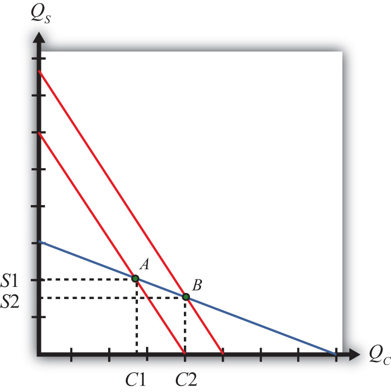

The Rybczynski theorem demonstrates how changes in an endowment affect the outputs of the goods when full employment is maintained. The theorem is useful in analyzing the effects of capital investment, immigration, and emigration within the context of a Heckscher-Ohlin (H-O) model. Consider Figure 5.2 "Graphical Depiction of Rybczynski Theorem", depicting a labor constraint in red (the steeper lower line) and a capital constraint in blue (the flatter line). Suppose production occurs initially on the PPF at point A.
Figure 5.2 Graphical Depiction of Rybczynski Theorem
Next, suppose there is an increase in the labor endowment. This will cause an outward parallel shift in the labor constraint. The PPF and thus production will shift to point B. Production of clothing, the labor-intensive good, will rise from C1 to C2. Production of steel, the capital-intensive good, will fall from S1 to S2.
If the endowment of capital rose, the capital constraint would shift out, causing an increase in steel production and a decrease in clothing production. Recall that since the labor constraint is steeper than the capital constraint, steel is capital intensive and clothing is labor intensive.
This means that, in general, an increase in a country’s endowment of a factor will cause an increase in output of the good that uses that factor intensively and a decrease in the output of the other good.
Jeopardy Questions. As in the popular television game show, you are given an answer to a question and you must respond with the question. For example, if the answer is “a tax on imports,” then the correct question is “What is a tariff?”